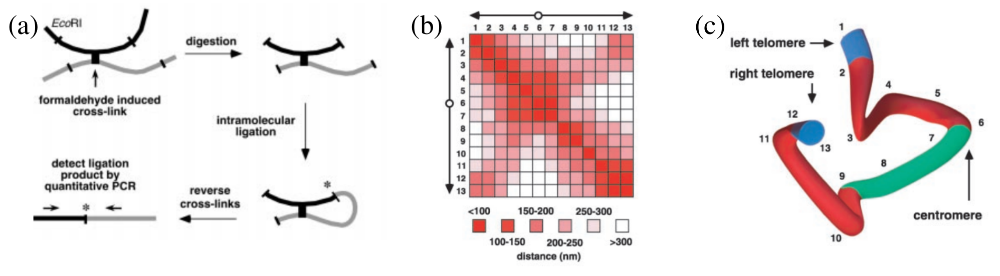

Экcперименты FISH и Hi-C позволяют получить информацию о пространственной организации молекулы ДНК внутри хромосомы [Dekker02], [Lieberman-Aiden], [Fraser], [Nagano].
Суть эксперимента состоит в том, чтобы при помощи химической реакции скрепить соседние участки нити ДНК друг с другом (Рисунок 1a).
Затем геном расшепляется на \(N\) небольших участков, при этом химическая сцепка не разрушается.
В результате получается раствор, содержащий \(N\) небольших участков ДНК, некоторые из которых скреплены между собой.
Далее делается предположение, что вероятность того, что участки \(i\) и \(j\) окажутся скреплены зависит от того, насколько близко друг к другу они находились изначально.
То есть, если какие-то из участков находятся в хромосомах близко друг к другу, очень вероятно что они свяжутся.
Если же они находятся далеко, то вероятность связывания мала.
Посчитав количества пар \(i-j\) в растворе, можно построить матрицу близости отдельных учатков ДНК в хромосоме (Рисунок 1b).
Используя эту матрицу, можно хатем восстановить исходную пространственную структуру ДНК (Рисунок 1c).

Fig. 11 Рисунок 1:
(a): Схема эксперимента Hi-C.
Два соседних участка скрепляются ковалентной сшивкой, затем ДНК расщепляется специальным ферментом.
Далее проводится анализ того, какие из участков ДНК скрепились между собой.
(b): Участок получаемой в результате эксперимента матрицы близости участков ДНК.
Индексы \(i\) и j в матрице соответствуют номеру участка ДНК, а цвет — близости участков \(i\) и \(j\) в хромосоме.
Близость определяется из количества раз, в которых участки \(i\) и \(j\) были связаны между собой в эксперименте.
(c): Интерпретация экспериментальных даннных на примере короткого участка молекулы ДНК.
Иллюстрация взята из [Dekker02].
Результатом эксперимента Hi-C являются матрицы \(U\) близости размером \(N\times N\) , содержащие в качестве элемента \(U_{ij}\) количества связываний для каждой пары участков ДНК \(i\) и \(j\).
Примеры результатов реальных экспериментов можно скачать поэтойссылке.
Каждой хромосоме соответствует отдельный файл.
Каждый файл содержит матрицу \(U_{ij}\) размером \(N\times N\) в текстовом формате (\(N\) строк, по \(N\) значений в каждой).
В работе предлагается реализовать программу, которая будет восстанавливать структуру ДНК по этим матрицам.
При этом ДНК представляется в виде набора из \(N\) взаимодействующих центров с координатами \({\mathbf{r}_i}\). Центры \(i\) и \(i + 1\) связываются ковалентно, при помощи гармонического потенциала:
где \(k_c = 100\) кДж/моль — коэфициент упругости ковалентной связи, а \(r_0 = 0.1\) нм — равновесное расстояние.
Все пары фрагментов ДНК \(i\) и \(j\), для которых элемент матрицы \(U_{ij}\) не нулевой, также связываются при помощи гармонического потенциала:
где \(m_i = 1.0\) г/моль — масса частиц, \(V({\mathbf{r}_i}) = V_{cov}({\mathbf{r}_i}) + V_{hic}({\mathbf{r}_i})\) — потенциальная энергия системы, \(\nabla_i V\) — градиент потенциала по координате \(i\)-ой частицы. \(\eta_i(t)\) — случайная сила, описывающая соударения с молекулами воды с нормальным распределением:
Динамику Ланжевена можно рассматривать как динамику Ньютона с добавлением двух дополнительных сил: силы трения, пропорциональной скорости частицы и случайной силы, распределенной по Гауссу. Коэффициент пропорциональности \(\lambda\) называется константой демпфирования и задает силу влияния среды на молекулу. При больших \(\lambda\) система переходит к Брауновскому движению, при малых — к Ньютоновскому.
Для численного решения уравнения Ланжевена можно использовать следующую разностную схему:
Здесь, \(\lambda=50\) пс \(^{-1}\) — константа демпфирования, \(\mathbf{r}_i^f\) — вектор из трех нормально распределенных случайных величин, с дисперсией \(1\) и математическим ожиданием \(0\). Постоянная Больцмана \(k_B=8.31\times10^{-3}\) кДж/K*моль, шаг по времени \(\tau=0.001\) пс, температура \(T=300\) K.
В качестве начальной структуры можно взять линейную молекулу, в которой частицы разделены расстоянием в \(0.1\) нм. Так как все частицы связаны, периодические граничные условия не требуются.
К заданию прилагается архив, который содержит экспериментальные данные и небольшую программу, которая считывает данные из файла и распечатывает на экран все пары с ненулевыми значениями \(U_{ij}\).
При использовании файлов координат (например, xyz), VMD добавляет в отображения связи, основываясь на расстоянии между частицами.
Чтобы отобразить нить ДНК в виде цепочки связанных частиц, можно создать файл координат, где эти частицы будут находится вдоль одной прямой на расстоянии 1.0 Ангстрем друг от друга.
Эти координаты потом можно удалить из молекулы.
Lieberman-Aiden, N. L. Van Berkum, L. Williams, M. Imakaev, T. Ragoczy, A. Telling, I. Amit, B. R. Lajoie, P. J. Sabo, M. O. Dorschner, et al., “Comprehensive mapping of long-range interactions reveals folding principles of the human genome,” Science, vol. 326, no. 5950, pp. 289–293, 2009.
Fraser, I. Williamson, W. A. Bickmore, and J. Dostie, “An overview of genome organization and how we got there: from FISH to Hi-C,” Microbiol. Mol. Biol. Rev., vol. 79, no. 3, pp. 347–372, 2015.
Nagano, Y. Lubling, T. J. Stevens, S. Schoenfelder, E. Yaffe, W. Dean, E. D. Laue, A. Tanay, and P. Fraser, “Single-cell Hi-C reveals cell-to-cell variability in chromosome structure,” Nature, vol. 502, no. 7469, pp. 59–64, 2013.